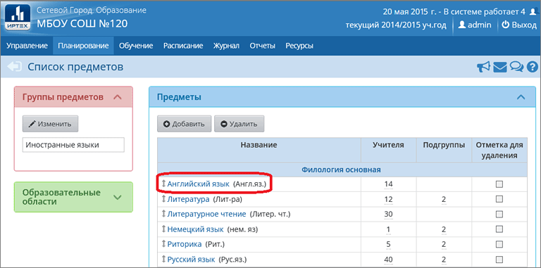
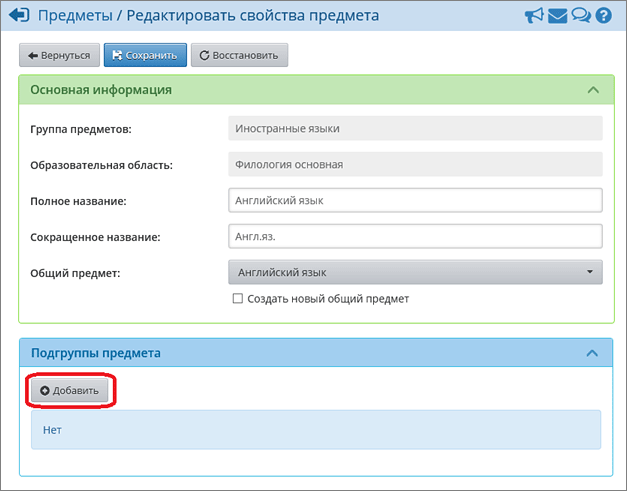
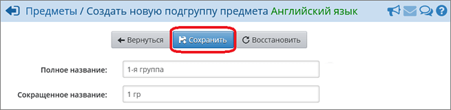
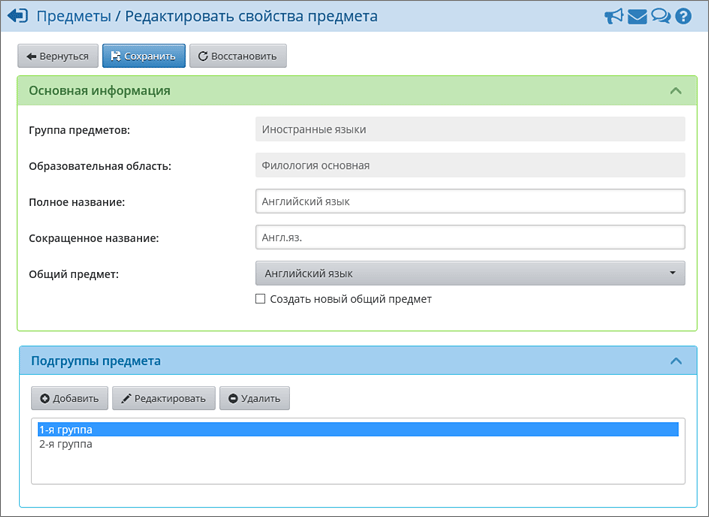
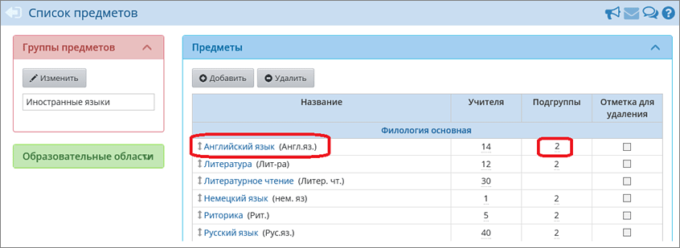
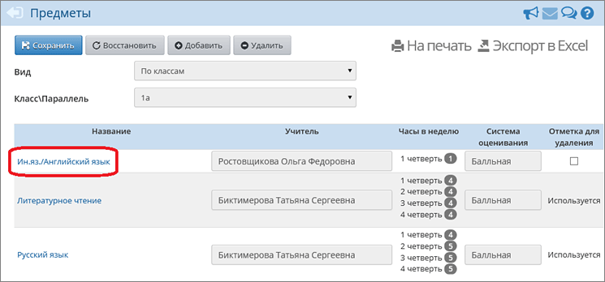
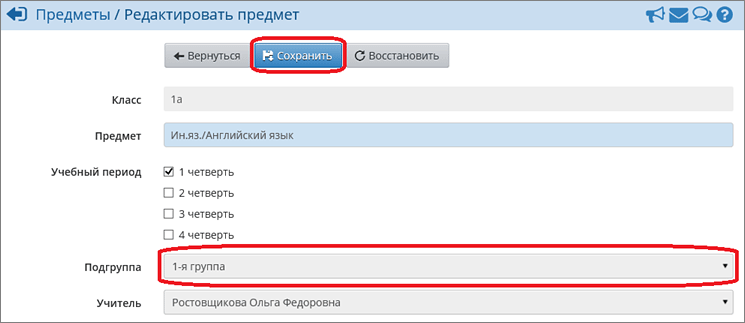
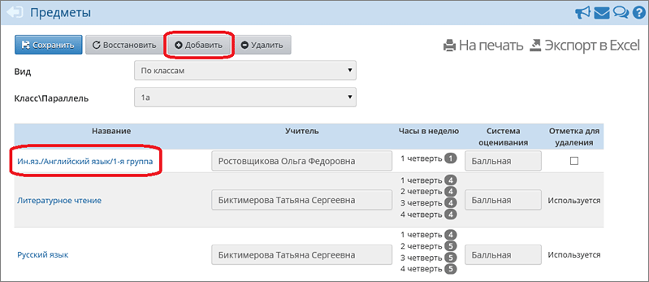
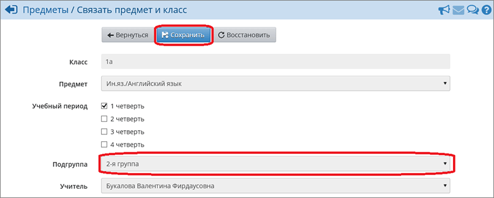
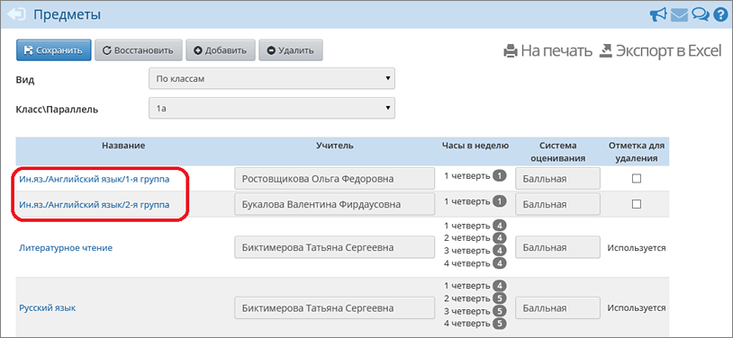

Подгруппы создаются в разделе Планирование -> Предметы. Для этого нажмите на гиперссылку с названием предмета:

В открывшемся окне, в блоке "Подгруппы предмета" нажмите кнопку Добавить, введите название подгруппы и нажмите кнопку Сохранить (аналогичным образом создается и вторая подгруппа, если понадобится):



После того как все необходимые подгруппы будут созданы, вы можете добавить учителей. Для этого в блоке "Преподаватели предмета" нажмите кнопку Добавить, в открывшемся окне отметьте галочками нужных преподавателей и нажмите кнопку Сохранить.
Таким образом, можно создать все необходимые подгруппы.

Для того, чтобы добавить подгруппы в конкретный класс, необходимо перейти в раздел Обучение->Предметы, нажать на ссылку предмета, который необходимо разделить.

В появившемся окне выбрать подгруппу и преподавателя, нажать кнопку Сохранить.

Затем нажать кнопку Добавить и в появившемся окне выбрать остальные подгруппы и преподавателей.



Чтобы зачислить учеников в подгруппы, необходимо перейти в раздел Обучение->Подгруппы и отметить галочками нужных учеников для конкретной подгруппы, затем нажать кнопку Сохранить.